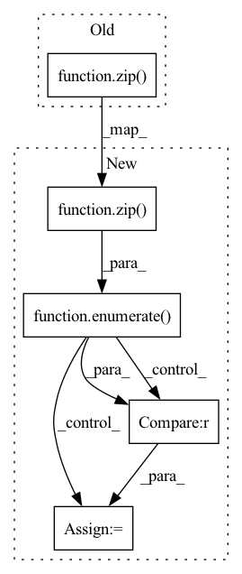

Pattern ID :2948

Before Change
next_cmem = []
aux_loss = torch.zeros(1, requires_grad = True, **to(x))
for attn, ff, m, c in zip(self.attn_layers, self.ff_layers, mem, cmem):
x, (mem_out, cmem_out), layer_aux_loss = attn(x, memories = (m, c), input_mask = mask, pos_emb = pos_emb)
x, = ff(x)
After Change
next_cmem = []
aux_loss = torch.zeros(1, requires_grad = True, **to(x))
for ind, (attn, ff, m, c) in enumerate(zip(self.attn_layers, self.ff_layers, mem, cmem)):
layer_num = ind + 1
use_memory = layer_num in self.use_memory_layers
x, (mem_out, cmem_out), layer_aux_loss = attn(x, memories = (m, c), input_mask = mask, pos_emb = pos_emb)
x, = ff(x)
In pattern: SUPERPATTERN
Frequency: 4
Non-data size: 5
Instances
Fragment ID: 9751692
Project Name: lucidrains/compressive-transformer-pytorch
Commit Name: 2bc4a3213aeccc3b603df09b552feb4beca4ed39
Time: 2020-07-02
Author: lucidrains@gmail.com
File Name: compressive_transformer_pytorch/compressive_transformer_pytorch.py
M Class Name: CompressiveTransformer
N Class Name: CompressiveTransformer
M Method Name: forward(4)
N Method Name: forward(4)
M Parent Class: nn.Module
N Parent Class: nn.Module
M File Name: compressive_transformer_pytorch/compressive_transformer_pytorch.py
N File Name: compressive_transformer_pytorch/compressive_transformer_pytorch.py
M Start Line: 265
M End Line: 275
N Start Line: 269
N End Line: 281
'>
Before Change
grad_accumulate_every = math.ceil(x.shape[0] / max_batch_size)
mems = [None] * grad_accumulate_every
for xi_seg, xo_seg, mask_seg in zip(xi, xo, mask):
xi_seg, xo_seg = map(split_batch_fn, (xi_seg, xo_seg))
mask_seg = split_batch_fn(mask_seg) if mask_seg is not None else ((None,) * grad_accumulate_every)
After Change
grad_accumulate_every = math.ceil(x.shape[0] / max_batch_size)
mems = [None] * grad_accumulate_every
for ind, (xi_seg, xo_seg, mask_seg) in enumerate(zip(xi, xo, mask)):
xi_seg, xo_seg = map(split_batch_fn, (xi_seg, xo_seg))
mask_seg = split_batch_fn(mask_seg) if mask_seg is not None else ((None,) * grad_accumulate_every)
truncate = truncate_every is not None and ((ind + 1) % truncate_every) == 0
new_mems = []
for ind, (xi_seg_b, xo_seg_b, mask_seg_b, mem) in enumerate(zip(xi_seg, xo_seg, mask_seg, mems)):
is_last = ind == (grad_accumulate_every - 1)
'>
Fragment ID: 9751688
Project Name: lucidrains/memory-transformer-xl
Commit Name: d4ae80a8ce18a5ab0d871139f195bb78a7529547
Time: 2020-07-22
Author: lucidrains@gmail.com
File Name: memory_transformer_xl/autoregressive_wrapper.py
M Class Name: AutoregressiveWrapper
N Class Name: AutoregressiveWrapper
M Method Name: forward(5)
N Method Name: forward(4)
M Parent Class: nn.Module
N Parent Class: nn.Module
M File Name: memory_transformer_xl/autoregressive_wrapper.py
N File Name: memory_transformer_xl/autoregressive_wrapper.py
M Start Line: 133
M End Line: 141
N Start Line: 108
N End Line: 144
'>
Before Change
// spatial tokens is tokens with depth pos reduced along depth dimension + spatial positions
for stage_tokens, transformer in zip(tokens_at_stages, self.transformers):
stage_tokens = torch.cat((
start_tokens,
stage_tokens,
After Change
// spatial tokens is tokens with depth pos reduced along depth dimension + spatial positions
for ind, (stage_tokens, transformer) in enumerate(zip(tokens_at_stages, self.transformers)):
is_last = ind == (self.stages - 1)
stage_tokens = torch.cat((
start_tokens,
stage_tokens,
'>
Fragment ID: 9751690
Project Name: lucidrains/rq-transformer
Commit Name: 56a8e24814d90cebb03454d9feed0bff4bee69ba
Time: 2022-04-12
Author: lucidrains@gmail.com
File Name: rq_transformer/hierarchical_causal_transformer.py
M Class Name: HierarchicalCausalTransformer
N Class Name: HierarchicalCausalTransformer
M Method Name: forward(3)
N Method Name: forward(3)
M Parent Class: nn.Module
N Parent Class: nn.Module
M File Name: rq_transformer/hierarchical_causal_transformer.py
N File Name: rq_transformer/hierarchical_causal_transformer.py
M Start Line: 279
M End Line: 329
N Start Line: 293
N End Line: 344
'>
Before Change
def forward(self, x, context = None, mask = None, context_mask = None):
prev_attn = None
for (layer_type, (norm, block)) in zip(self.layer_types, self.layers):
if self.pre_norm:
x = norm(x)
After Change
def forward(self, x, context = None, mask = None, context_mask = None):
prev_attn = None
for ind, (layer_type, (norm, block)) in enumerate(zip(self.layer_types, self.layers)):
is_last = ind == (len(self.layers) - 1)
if self.pre_norm:
x = norm(x)
'>
Fragment ID: 9751691
Project Name: lucidrains/x-transformers
Commit Name: ee19224d7ddb80e764cd17915652c5b2529604cd
Time: 2020-12-27
Author: lucidrains@gmail.com
File Name: x_transformers/x_transformers.py
M Class Name: AttentionLayers
N Class Name: AttentionLayers
M Method Name: forward(5)
N Method Name: forward(5)
M Parent Class: nn.Module
N Parent Class: nn.Module
M File Name: x_transformers/x_transformers.py
N File Name: x_transformers/x_transformers.py
M Start Line: 351
M End Line: 367
N Start Line: 351
N End Line: 369